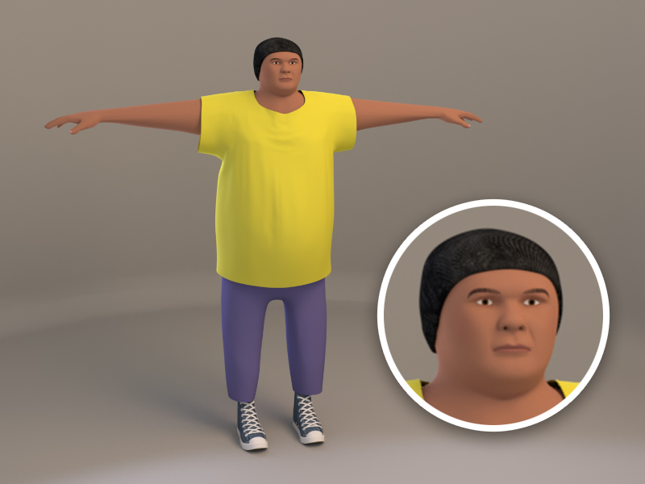
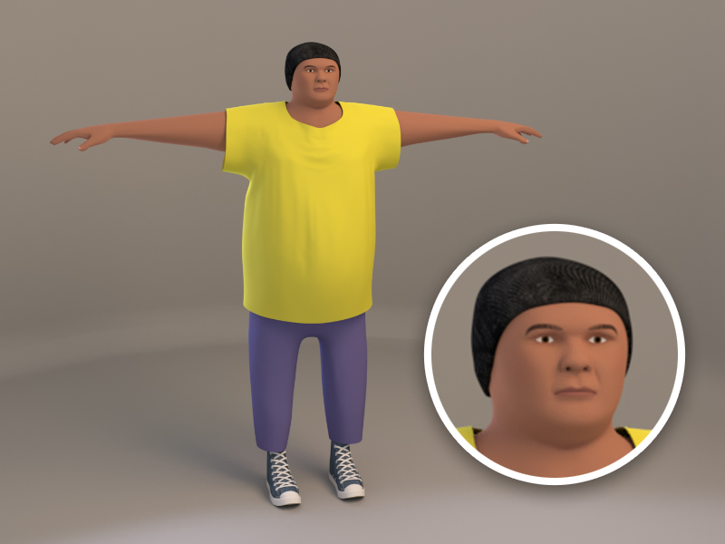

Bachelor of Creativity: Level 7
Wellington Institute of Technology, 2022
Wellington Institute of Technology, 2022
3D Environment
Semester 1: Applied Media
Semester 1: Applied Media
After using photogrammetry assets to create a simple proportionately-accurate reference mesh, I then remodelled the entire scene to create this landscape based on Mount Victoria.
Character
Semester 1: Applied Media 
Semester 1: Applied Media 
My fourth attempt at modelling a CGI character, this one based on a classmate.
Video Game
Semester 1: Major Projects
Semester 1: Major Projects
This is a video game that has my previous work laid out in thematically-appropriate environments (for instance, photography work in a walk-through art gallery).